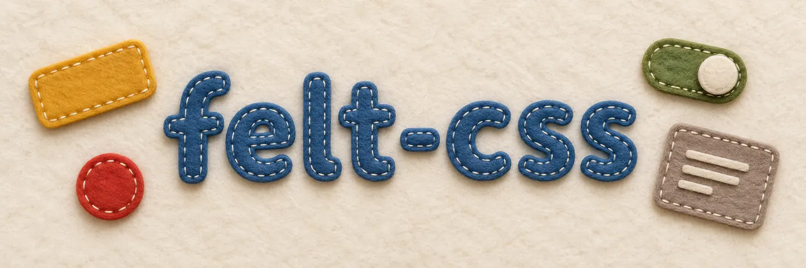

Bootstrap, but made of wool felt
A small, dependency-free CSS toolkit with Bootstrap 5 class names and two looks: a clean one for everyday work, and a cosy one where every card is cut from felt and every button is sewn on by hand.
Public domain · CSS only · about 33 KB gzipped plus 42 KB of felt photos
Get started in a minute#
No build step and no package to install. Copy felt.css and the img/ folder next to it, link the stylesheet and switch on the felt look with one attribute. Bring Bootstrap's own JavaScript for dropdowns, modals and friends.
<html data-look="felt"> <!-- leave it out for the clean look -->
<head>
<link rel="stylesheet" href="felt.css">
</head>
<body>
<div class="card">
<div class="card-header">New expense</div>
<div class="card-body">…</div>
<div class="card-footer">
<button class="btn">Cancel</button>
<button class="btn btn-primary">Save</button>
</div>
</div>
</body>Bootstrap names#
Same classes, same markup, same JavaScript. If you know Bootstrap 5.3 you already know felt-css; most pages of these docs are Bootstrap's own, trimmed to what is here.
Two looks, one layout#
The felt layer only swaps colours, textures, shadows and seams — never padding, borders or fonts. Toggle the look and not a single pixel moves. How the felt works
Light and dark#
Dark mode works like Bootstrap's: data-bs-theme on any element, or the system setting. Dark felt is charcoal. Color modes
Your CSS wins#
All felt rules live in @layer felt behind :where(), with zero specificity. Whatever you write on top simply applies.
See it sewn together#
Three small apps built from nothing but felt-css: a smart-home dashboard, a shared-expenses app and a blog.
Browse examples